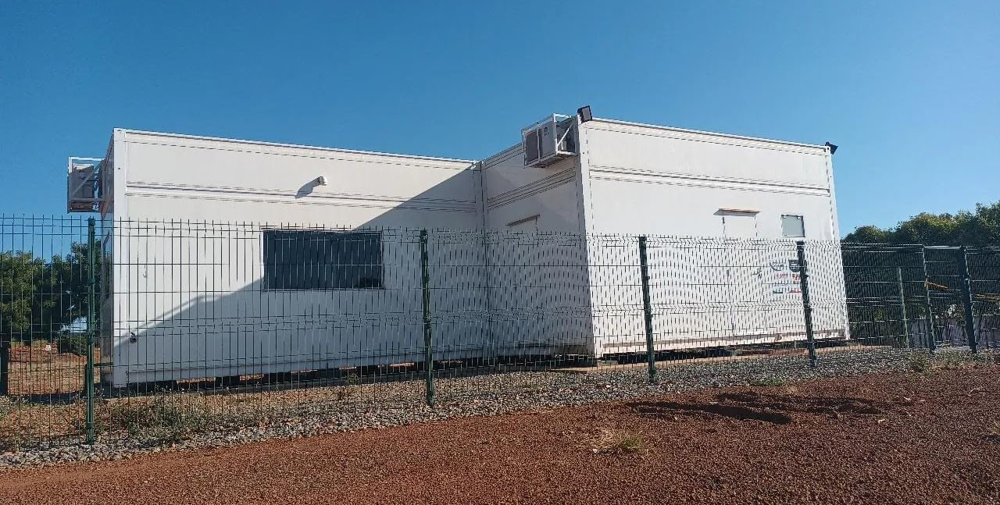

|  | Rodovia GO 010 KM 210 - Faz. Onça, Zona Rural, Luziânia - Goiás |
Nossa tecnologia de produção de bioinsumos na fazenda permite que reduzimos os custos de produção no item defensivos agrícola em até 70% nos cultivos de soja, milho, trigo, algodão.